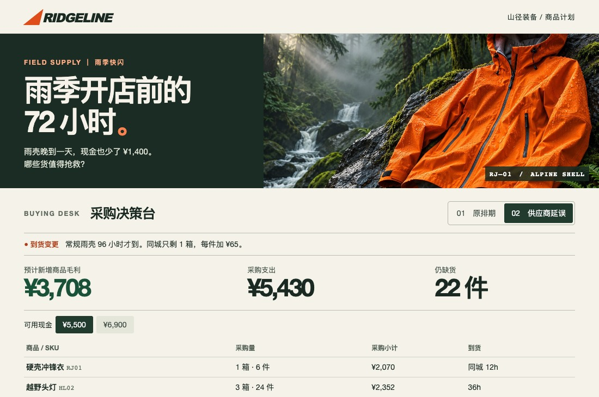
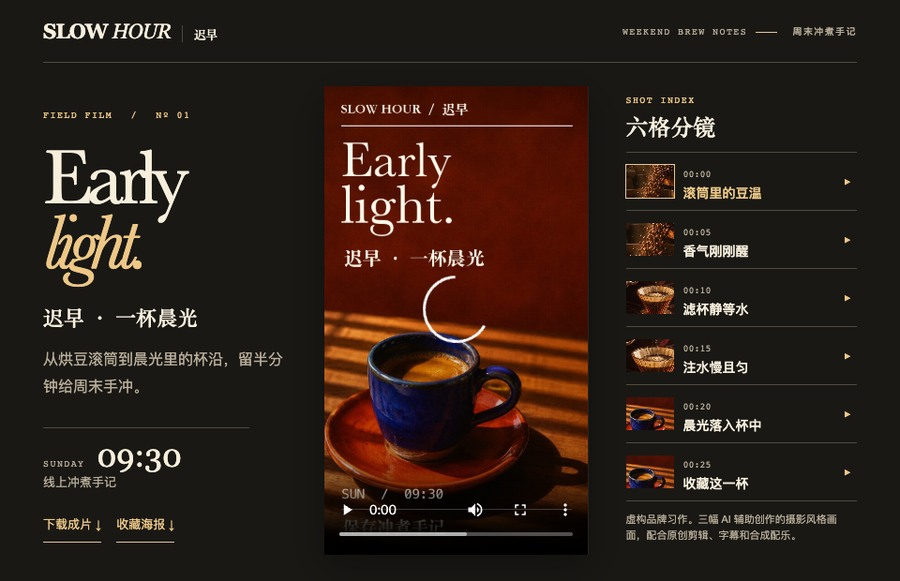
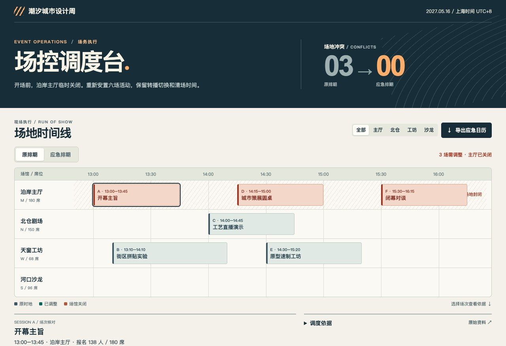
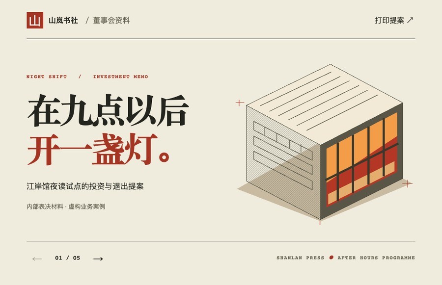
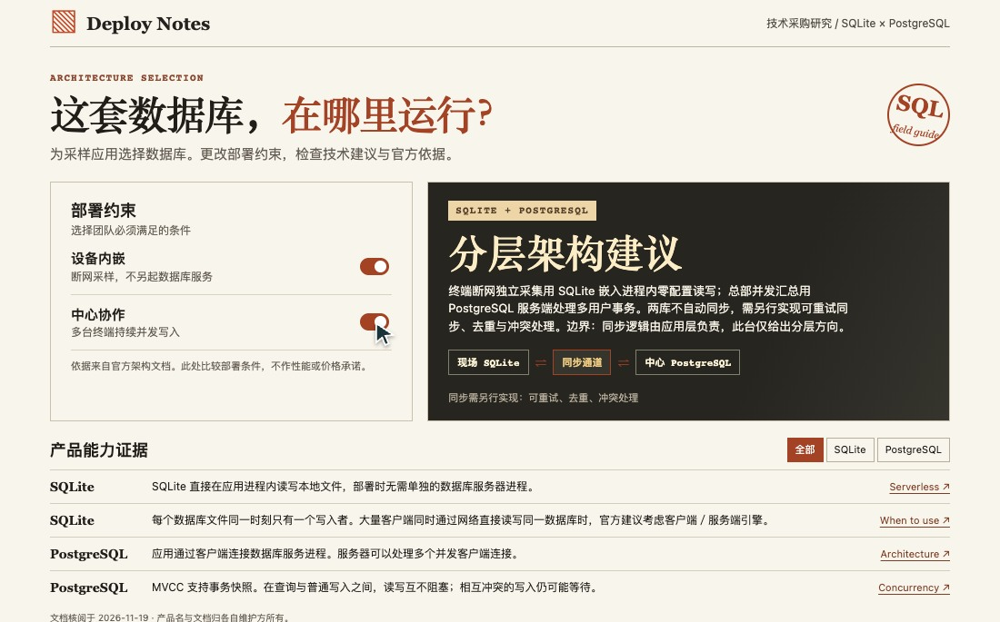
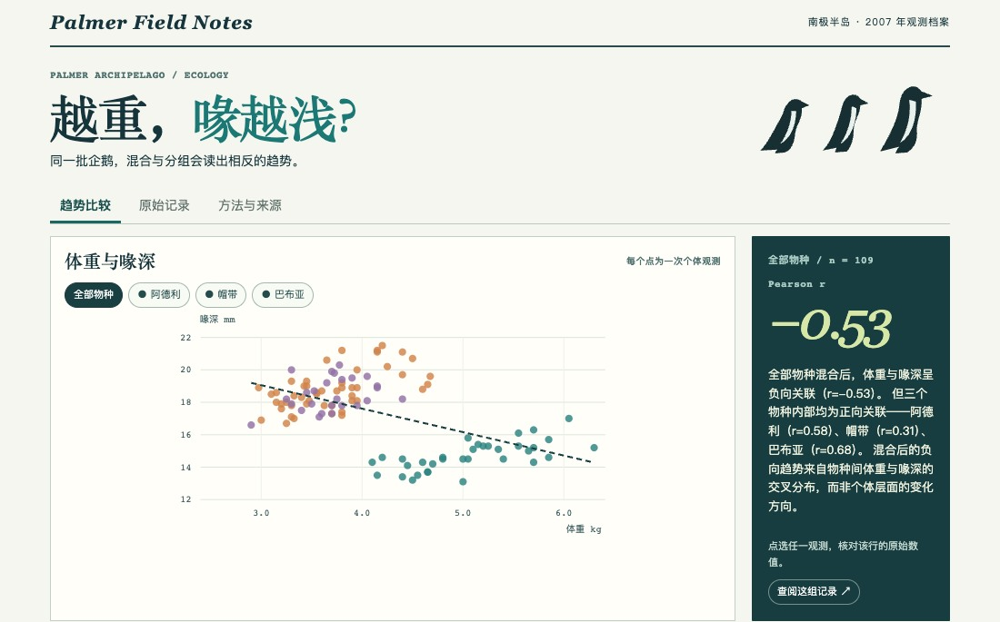

AIHUBOT / OPEN STUDIO
交付之后，
你可以接着用。
改一张采购单，放一支短片，或拆开一个统计结论。
六个实操案例，点开就能试。
六个实操案例，点开就能试。

商品计划 · CSV
开店前，雨壳晚到了。
现金少了 ¥1,400。重排三款商品，下载整箱采购单。

品牌内容 · 30″ MP4
把周末拍成三十秒。
播放咖啡短片，逐镜核对节奏，下载竖屏成片。

现场运营 · 日历
主厅临时关闭。
六场活动照常进行。检查新场地与设备冲突，导出日历。

经营决策 · 议案
一家书店，值不值得开夜场？
重算 600 个座位的盈亏线，检查第 4 周退出条件。

技术选型 · 一手来源
现场离线，还是多机并发？
改变部署条件，看推荐何时翻转，打开官方依据。

数据研究 · 开放观测
总体负相关，分组却都为正。
切换物种、点选样本，复核 2007 年的原始记录。